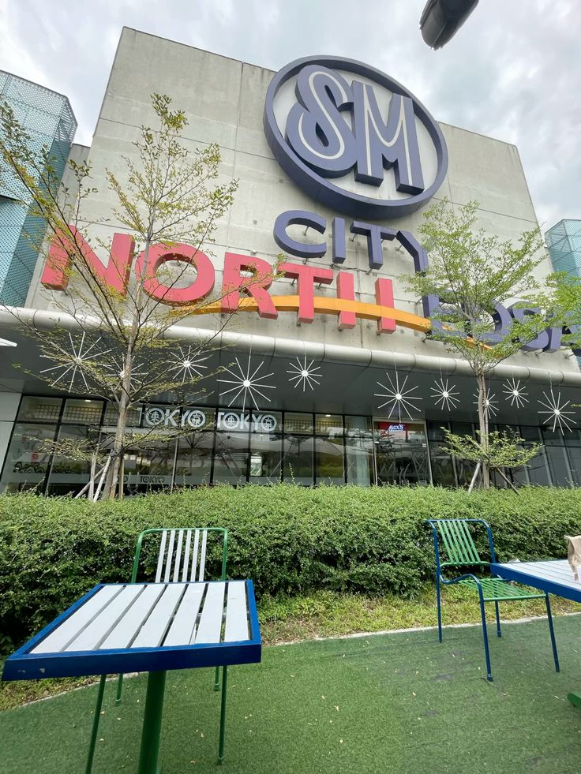
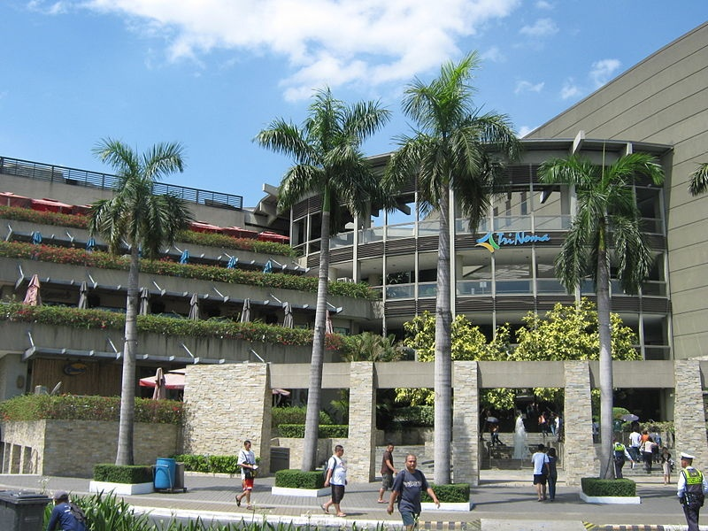
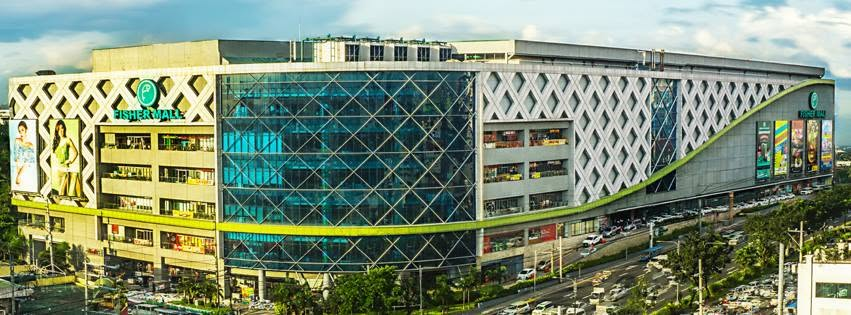
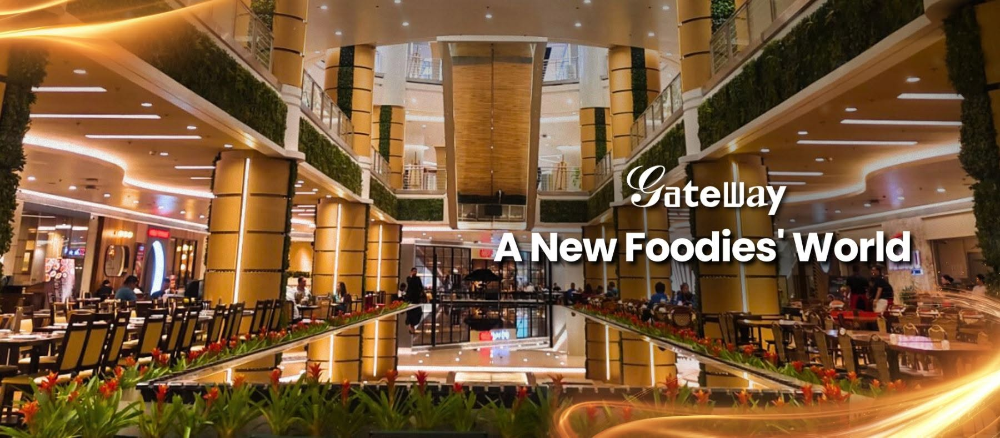

SM City North EDSA
North Avenue, Quezon City
Solid na tambayan kapag trip mo mag-food trip o magpalipas ng oras. Sobrang daming budget options at space para mag-lakad-lakad.

Welcome to QC Malls tambayan kung saan chill lang, mura ang kainan at walang nagmamadali
Local QC resident and student sharing my go-to mall tambayans across Quezon City based on personal experience.
North Avenue, Quezon City
Solid na tambayan kapag trip mo mag-food trip o magpalipas ng oras. Sobrang daming budget options at space para mag-lakad-lakad.

EDSA corner Quezon Avenue, Quezon City
Chill outdoor rooftop garden vibe na swak pang-usap o mag-unwind pagkatapos ng klase, plus napaka-convenient sa biyahe dahil katabi mismo ang SM North.

Quezon Avenue, Quezon City
Kung ayaw mo sa sobrang siksikan, May magandang arcade, kainan, at relaxed lang ang mood lagi.

Araneta City, Cubao, Quezon City
Gitna ng lahat, kumbaga ang center of the universe. Solid sa Gateway kung gusto mo ng malamig at maayos na spot sa QC.
